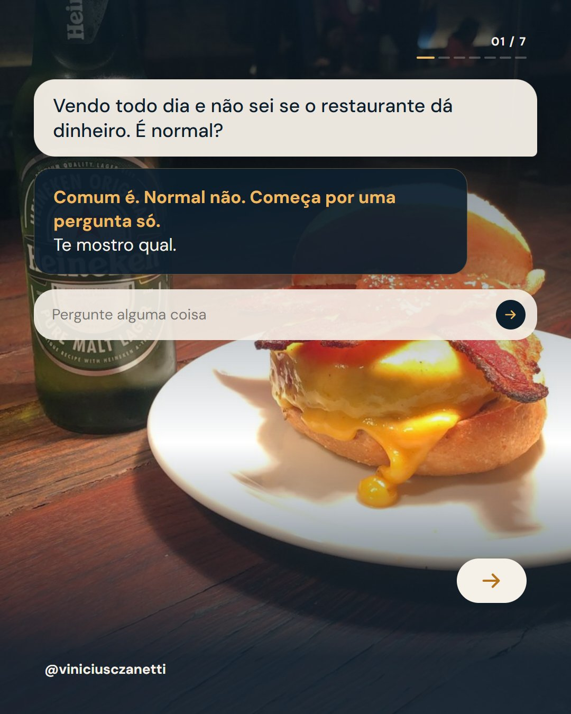

Vende todo dia e não sabe se o restaurante dá dinheiro? A primeira pergunta é quanto sobrou
Caixa girando não é lucro. Antes de vender mais ou cortar custo, o dono precisa de um número só: o que ficou no fim do mês, depois de pagar fornecedor, equipe, aluguel, taxas e o próprio salário.
Publicado em 16/11/2026
O restaurante abre todo dia. O fornecedor recebe, a equipe recebe, o aluguel é pago. E, se alguém pergunta ao dono se o negócio dá dinheiro, ele não sabe responder. Segundo o consultor Vinícius Zanetti, essa é a cena que ele mais encontra quando começa a atender um restaurante novo.
Não é falta de trabalho. É falta de um número. Para Vinícius, a virada começa com uma pergunta só: quanto sobrou no mês passado, depois de pagar tudo?

"O que mais me surpreende quando chego num restaurante novo: o dono vende todo dia, paga todo mundo e não sabe se o negócio dá dinheiro."Vinícius Zanetti, no carrossel sobre vender e não saber se lucra
Por que o restaurante vende bem e o dono não sabe se tem lucro?
Porque o caixa gira. O dinheiro entra de manhã e sai à tarde. Enquanto as contas fecham, a impressão é de que o negócio vai bem. No carrossel, Vinícius resume a única régua que muitos donos usam no fim do mês: deu para pagar as contas?
Essa régua não mede lucro. Mede sobrevivência. Um mês em que tudo foi pago pode ter consumido a reserva, atrasado o próprio salário do dono ou empurrado um boleto para o mês seguinte. No livro Restaurante no Controle, Vinícius descreve o mesmo problema no capítulo de introdução.
"É possível ter fila na porta e terminar o mês no vermelho. É possível ter avaliações cinco estrelas e não conseguir pagar os fornecedores. É possível trabalhar 14 horas por dia e não saber ao final do mês se o negócio deu lucro."Vinícius Zanetti, no livro Restaurante no Controle
No mesmo capítulo, o livro aponta o primeiro dos cinco problemas mais recorrentes do setor: falta de controle financeiro real. Muitos empresários confundem movimento com lucro.
Quantos restaurantes trabalham sem lucro?
O dono que não sabe se lucra não está sozinho no aperto. Na Pesquisa Nacional de Conjuntura Econômica da Abrasel, divulgada em 28 de agosto, 42% dos bares e restaurantes disseram ter tido lucro em julho de 2026. Outros 37% ficaram em equilíbrio, ou seja, empataram, e 20% fecharam o mês no prejuízo. Foi o melhor resultado de lucro desde dezembro de 2025, e mesmo assim a maioria do setor terminou o mês sem sobra.
| Resultado de julho de 2026 (Abrasel) | Bares e restaurantes |
|---|---|
| Lucro | 42% |
| Equilíbrio | 37% |
| Prejuízo | 20% |
Na mesma pesquisa, 37% dos estabelecimentos afirmaram ter pagamentos em atraso em julho. A pesquisa pergunta ao empresário qual foi o resultado. O dono que não fecha a conta do mês nem sabe em qual das três linhas está.
O empréstimo resolve?
Quando o mês não fecha, a saída mais rápida costuma ser o banco. Para Vinícius, é aí que o problema fica mais difícil de enxergar.
"O empréstimo esconde o problema por mais uns meses. O buraco continua lá."Vinícius Zanetti, no carrossel sobre vender e não saber se lucra
O dinheiro emprestado entra no caixa e parece faturamento. As contas voltam a fechar por um tempo. Só que a operação que gerava o buraco segue igual, e agora há uma parcela com juros todo mês. Nem toda falta de dinheiro é prejuízo: às vezes o restaurante lucra e o dinheiro está parado no cartão, no repasse do aplicativo ou no estoque, um problema de capital de giro, explicado na matéria Vende bem e falta dinheiro? É capital de giro. Para separar uma coisa da outra, o dono precisa primeiro saber quanto sobrou.
Como saber se o restaurante dá lucro?
O carrossel propõe um roteiro em cinco passos, sem planilha sofisticada:
- Some tudo o que entrou no mês. Salão, balcão, delivery próprio e aplicativos.
- Some tudo o que saiu. Fornecedor, equipe, aluguel e taxas.
- Separe o que é gasto do dono do que é da empresa. Compra da família paga com o cartão do restaurante distorce o número.
- Tire a diferença. Isso é o que sobrou.
- Anote e compare com o mês que vem. Um mês sozinho diz pouco. A sequência mostra a direção.
Há um detalhe que muda tudo. O dono que não tira um salário fixo tende a achar que a sobra é o lucro. Não é. É o salário dele misturado com o resultado do negócio.
"Se você ainda não tira um salário fixo, coloca ele na conta. Senão o número engana."Vinícius Zanetti, no carrossel sobre vender e não saber se lucra
Qual a diferença entre faturamento e lucro?
Faturamento é tudo o que entrou. Lucro é o que fica depois que cada custo foi pago. Entre um e outro há várias camadas, e é nelas que o dinheiro some. No capítulo Estrutura do livro Restaurante no Controle, Vinícius mostra a ordem da DRE gerencial que a Zatti usa:
| Linha | O que entra |
|---|---|
| Faturamento bruto | Tudo o que foi vendido |
| (-) Deduções | Impostos, taxas de cartão e taxas de delivery |
| = Faturamento líquido | |
| (-) CMV | O custo da mercadoria que virou venda |
| = Margem de contribuição | |
| (-) Custos fixos | Mão de obra com provisões, infraestrutura e logística |
| = Resultado | |
| (-) Saídas não operacionais | Por exemplo, parcelas de empréstimo |
| = Resultado final | O que de fato sobrou |
A conta dos cinco passos é a porta de entrada. A DRE é o passo seguinte, porque mostra onde a sobra se perdeu: na taxa do aplicativo, no CMV acima de 33%, na folha. Um erro comum é tratar as compras do mês como CMV, tema da matéria CMV não é compras do mês.
O que fazer a partir do número
Para Vinícius, vender mais ou cortar custo vem depois. Sem saber quanto o restaurante deixa no fim do mês, o dono não sabe se precisa de mais venda, de preço melhor ou de menos desperdício. Ele pode até acertar, mas no chute.
"Antes de vender mais ou cortar custo, você precisa saber quanto o restaurante deixa no fim do mês."Vinícius Zanetti, no carrossel sobre vender e não saber se lucra
O teste do carrossel é simples: se o dono não responde em dez segundos quanto sobrou no mês passado, esse é o primeiro número a descobrir. Com dois ou três meses anotados, a conversa muda. O dono para de perguntar se deu para pagar as contas e começa a perguntar quanto quer que sobre.
Atenção: sobra no fim do mês e dinheiro no caixa são coisas diferentes. Um mês com resultado positivo pode terminar com a conta bancária no vermelho, e o contrário também. Acompanhe os dois números lado a lado.
Perguntas frequentes
Como saber se meu restaurante dá lucro?
Some tudo o que entrou no mês, subtraia tudo o que saiu (fornecedor, equipe, aluguel, taxas e o seu salário) e separe os gastos pessoais dos da empresa. A diferença é o que sobrou. Compare mês a mês.
Faturamento alto significa lucro?
Não. Faturamento é o que entrou. Lucro é o que fica depois de deduções, CMV, custos fixos e saídas como parcelas de empréstimo. Um restaurante pode faturar bem e fechar o mês no zero.
O dono deve colocar o próprio salário na conta?
Sim. Sem um salário fixo do dono na conta, a sobra parece lucro, mas é a remuneração dele misturada ao resultado do negócio.
Pegar empréstimo resolve o mês que não fecha?
Resolve o caixa por um tempo, mas não a causa. Para Vinícius Zanetti, o empréstimo esconde o problema por mais uns meses e acrescenta uma parcela com juros.
Fontes
- Abrasel: Lucro de bares e restaurantes atinge melhor resultado desde dezembro (28/08/2026), Pesquisa Nacional de Conjuntura Econômica, dados de julho de 2026.
- Vinícius Zanetti, no Instagram: carrossel sobre vender e não saber se o restaurante dá dinheiro (15/10/2026).
- Vinícius Zanetti, Restaurante no Controle: Método M.E.G.A. de gestão para restaurantes (2026), introdução e capítulo Estrutura.